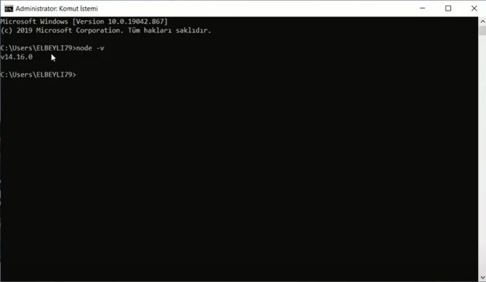
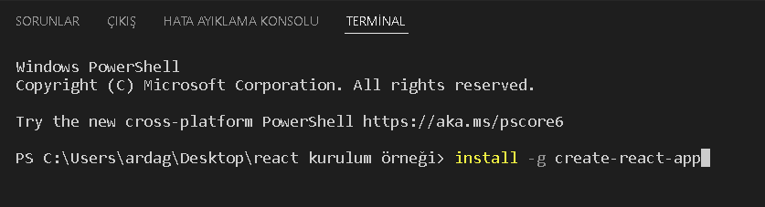
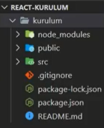

REACT KURULUM SÜRECİ (WİNDOWS)
React'ı kurmak ve düzgün çalıştırmak için öncelikle "Node.js" kurulmalıdır. "nodejs.org/tr/download" linkine giderek bilgisayarınıza uyan sürümünü indirin.
Kolay bir setup sürecinden geçip uygulamayı kurun. Daha sonra kontrol amaçlı cmd ekranına gelin ve " node -v " komutunu yazıp enter tuşuna basın.
Aşşağıda ki gibi bir sürüm yazılı ise doğru şekilde kurulmuş demektir.

Aynı işlemi npm içinde yapıyoruz.Npm kurulumunu öğrenmek içinse cmd ekranına npm -v yazmamız yeterli olacatır. Bu işemleri yaptıktan sonra cmd ekranımıza "npm instal -g create-react-app" yazarak kurulum işlemine devam ediyoruz (Biraz vaktinizi alabilir).
İşlem tamamlandığı zaman (Visual Studio Code editörü için anlatım yaptım) masaüstüne bir klasör açıyoruz.Daha sonra editörümüz üzerinden oluşturduğumuz klasörü açıyoruz.Üstte bulunan menüden "Terminal" seçeneğine tıklayıp "New Terminal" seçeneğine tıklıyoruz. Açılan Terminal penceresine install -g create-react-app yazıp enter tuşuna basıyoruz.

Bu işlemden sonra uzun bi kurulum süreci gerçekleşecektir. Kurulum tamamlandıktan sonra aynı yere create-react-app 'kurulacak dosyanın adı'" yazıp asıl dosyaların kurulum işlemine geçiyoruz. Kurulum tamamlandıktan sonra sol tarafa gerekli dosyalar gelecektir. Böylelikle kurulum işlemi tamamlanmış olur.

Bu işemleri yaptıktan sonra terminal ekranına "cd 'dosyanın adı' " komutunu yazıp ardından npm start yazarak kullanıma hazır hale getiriyoruz. Artık Reactı dilediğiniz gibi kullanabilirsiniz!